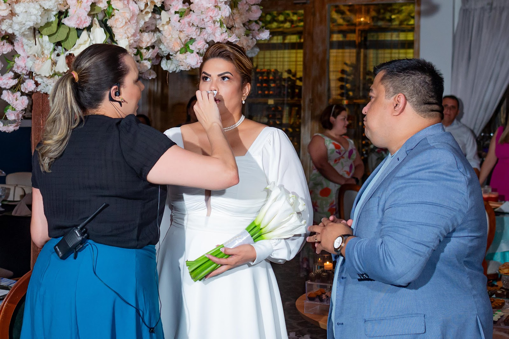
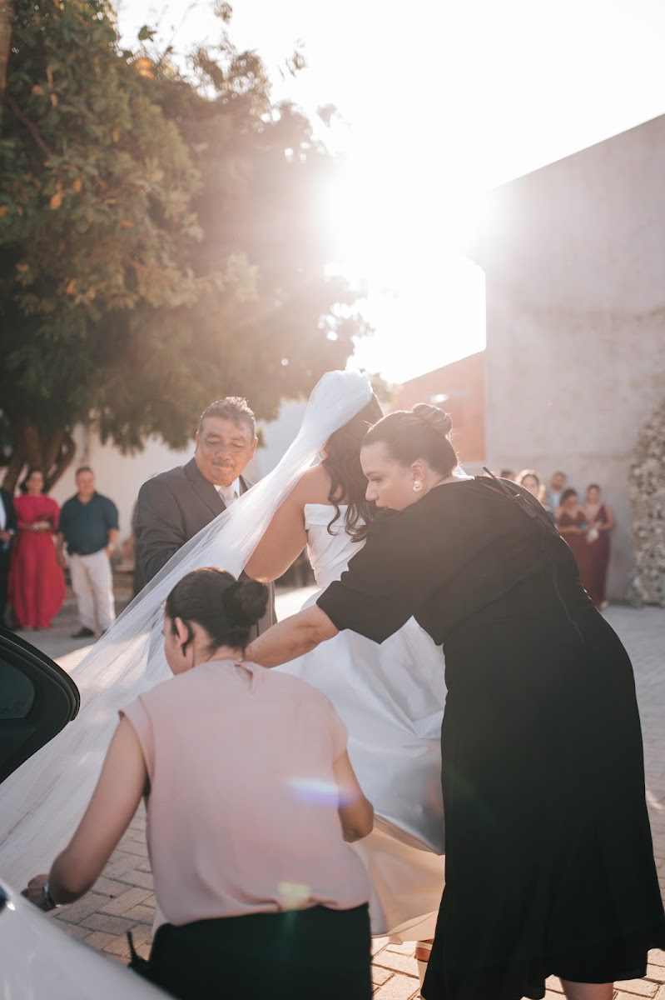

Prós e contras de cada fornecedor, reuniões com agenda e uma equipe pontual no dia, para vocês decidirem com segurança.

Encontros marcados com pauta, para nada ficar solto.
Uma opinião franca sobre cada opção. A escolha final é sempre de vocês.
Horários, entradas e responsáveis definidos com antecedência.
Pontual, atenta aos detalhes e disponível para os noivos.
Costuma ser objetiva em sua opinião sobre os fornecedores e serviços, levantando os prós e não deixando de apontar os contras.
Noiva · avaliação no GooglePara vocês saberem exatamente o que esperar, antes de contratar.
Deslize a tabela para o lado →
| O que está incluso | Assessoria completa | Assessoria parcial | Cerimonial do dia |
|---|---|---|---|
| Reuniões de planejamento | ✓ | ✓ | — |
| Indicação de fornecedores com prós e contras | ✓ | ✓ | — |
| Acompanhamento dos contratos | ✓ | — | — |
| Roteiro e cronograma do dia | ✓ | ✓ | ✓ |
| Equipe no dia do casamento | ✓ | ✓ | ✓ |
O número de reuniões, o tamanho da equipe e o horário de atuação de cada pacote vão por escrito na proposta.
Responda 5 perguntas e receba a descrição dos pacotes já com o resumo do casamento de vocês.
“A equipe é pontual, atenciosa, cuidadosa com os detalhes, e estão sempre disponíveis para as demandas dos noivos.”
Noiva · Google“Mulher extremamente sensível e comprometida com o evento do começo ao fim.”
Cliente · Google“Levantando os prós e não deixando de apontar os contras.”
Noiva · GoogleQuanto antes, melhor: a assessoria ajuda justamente na escolha dos fornecedores, que costumam fechar agenda cedo. Chame no WhatsApp com a data e a gente conversa.
A equipe chega antes dos convidados, confere o roteiro com os fornecedores e conduz cada momento, da cerimônia à festa.
Uma pessoa da equipe acompanha os noivos de perto. Os detalhes de cada pacote vão por escrito na proposta.

WhatsApp: (85) 98718-8505
Atendimento com hora marcada, em Fortaleza - CE